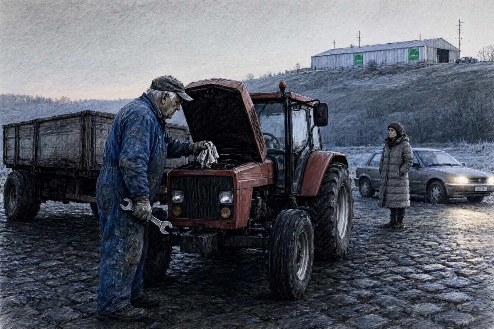

Sous les voûtes de béton armé de l'ancien fort de Mutzig, reconverti en centre de calcul cryogénique par OmniCorp Predict, la température était maintenue à quatre degrés constants. Le souffle des ventilateurs formait un bourdonnement sourd, semblable au moteur d'un paquebot en haute mer.
Le docteur Claire Vogt, quarante ans, le col de sa polaire relevé jusqu'au menton, observait les courbes de probabilité de l'Eurométropole sur son moniteur quadruple écran. Le modèle, baptisé Pythie-6, calculait en temps réel les flux d'usure des voiries, les ruptures de stocks d'insuline et les sinistres agricoles des sept cantons bas-rhinois.
Mathias Kroll, directeur des opérations prédictives, s'arrêta derrière son fauteuil, un gobelet de café soluble fumant entre ses doigts courts.
« Le taux de déviation sur le canton de Molsheim, Claire ? « Zéro virgule zéro quatre pour cent d'anomalie résiduelle sur la semaine, répondit-elle d'une voix neutre. Mais nous avons un faux positif sur la parcelle huit cent douze, au ban de Dinsheim. » « Quel genre d'incident ? » « Une collision frontale programmée entre une ensileuse et un car scolaire à sept heures quarante-cinq au carrefour de la route départementale trois cent quatre-vingt-douze. L'accident a été valorisé à quatre cent vingt mille euros de dédommagement dans les bilans trimestriels d'OmniCorp Assurance. » »
Kroll fronça ses sourcils épais.
« Et le car a dévié ? « Le car est passé à l'heure, dit Claire en pointant un index ganté de mitaine vers le journal de bord. Mais l'ensileuse n'est jamais sortie du hangar. Le conducteur, un exploitant nommé Daniel Walter, a calé en amorçant sa pompe à injection. Il a mis quarante minutes à purger son circuit de gasoil. » »
Kroll but une gorgée de café sans cligner des yeux.
« Ce n'est pas une anomalie humaine, Claire. C'est une erreur de calibrage mécanique. Forcez la réintégration de l'accident au créneau de mardi prochain. »
* * *
À quatorze heures, Claire gara sa citadine sur le bas-côté de la route de Dinsheim, devant une cour de ferme pavée de grès rose où séchaient deux remorques de maïs.
Daniel Walter, soixante ans, salopette de coutil bleu graisseuse aux genoux, avait la tête sous le capot ouvert d'un vieux tracteur rouge des années quatre-vingt.
Claire s'arrêta au pied du marchepied.
« Monsieur Walter ? « Si c'est pour l'abonnement à la fibre agricole, dit l'homme sans sortir la tête du bloc moteur, vous pouvez remonter dans votre voiture. Le commercial est passé hier avec une tablette pour m'expliquer que mes vaches avaient besoin de balises GPS. Je lui ai lâché le chien aux mollets. » « Je ne vends rien, monsieur Walter. Je voulais savoir pourquoi vous n'étiez pas sur la départementale ce matin à sept heures quarante. » « Pourquoi j'y serais allé ? » demanda Walter en s'extirpant du compartiment moteur, un chiffon gras à la main. »
Il jeta un regard méfiant à la silhouette citadine de Claire.
« Le filtre à carburant était plein de dépôt d'huile lourde. J'ai voulu allumer ma pipe en attendant que le réservoir se remplisse, le vent a éteint trois allumettes, et le temps que je trouve mon briquet dans la cuisine, le facteur montait la côte. Si j'avais démarré à l'heure de l'horloge, je coupais la priorité au car de ramassage au carrefour du pont. « Et vous n'avez pas reçu l'alerte de circulation d'OmniData sur votre téléphone ? » « Mon téléphone est dans le tiroir du buffet depuis trois ans, » grogna le paysan en essuyant une clé de douze. »
* * *
À dix-neuf heures, de retour dans la salle des machines de Mutzig, Claire refusa de valider la mise à jour algorithmique que Kroll lui avait laissée en attente sur sa console.
Le fichier de recalibrage imposait une majoration de vingt pour cent sur la prime d'assurance de Daniel Walter pour défaut d'entretien préventif ayant généré un risque systémique non advenu.
Kroll franchit le sas blindé, son pardessus sur le bras.
« Vous n'avez pas signé la clôture de lot, Claire. « Walter n'a commis aucune faute, Mathias. Il a simplement calé parce que son carburateur était sale. Vous voulez punir un homme pour avoir empêché un accident que vos serveurs avaient budgétisé à l'avance. » « Si nous laissons subsister une faille de zéro virgule zéro quatre pour cent dans la région, le modèle de prévision de Francfort perd son accréditation bancaire vendredi soir, » répliqua Kroll avec une sécheresse glaciale. »
Il posa sa main sur l'épaule de Claire, appuyant de tout son poids.
« Les marchés ne paient pas pour savoir ce qui pourrait arriver. Ils paient pour que ce qui arrive corresponde à ce qu'ils ont déjà acheté. Si l'ensileuse ne percute pas le car, elle doit au moins payer la valeur de la tôle froissée sous forme d'amende contractuelle. Signez. »
Claire le regarda dans les yeux.
« Supprimez mon compte administrateur. »
* * *
À vingt et une heures, Claire franchit la grille d'enceinte du fort sous une bourrasque de neige fondue. Les caméras thermiques d'OmniCorp pivotèrent lentement dans son dos avec un cliquetis de servomoteur.
Au bord de la route départementale, l'arrêt d'autobus n'était qu'un abribus de tôle ondulée battu par les rafales d'ouest. Le car postal de la vallée de la Bruche arriva avec dix minutes de retard, ses phares jaunes perçant la poudrerie.
Claire monta la première, déposa trois pièces d'un euro sur la console du chauffeur et s'assit près d'une vitre embuée.
Dans le car, six adolescents regardaient leurs téléphones en silence, leurs visages baignés d'une lueur bleutée. Sur l'écran du tableau de bord au-dessus du pare-brise, une diode verte indiquait : Trajet sous surveillance prédictive OmniCorp. Probabilité de retard à l'arrivée : zéro pour cent.
Le chauffeur engagea la première, fit patiner les pneus sur le verglas, et accéléra dans la nuit noire des Vosges sans regarder le rétroviseur.